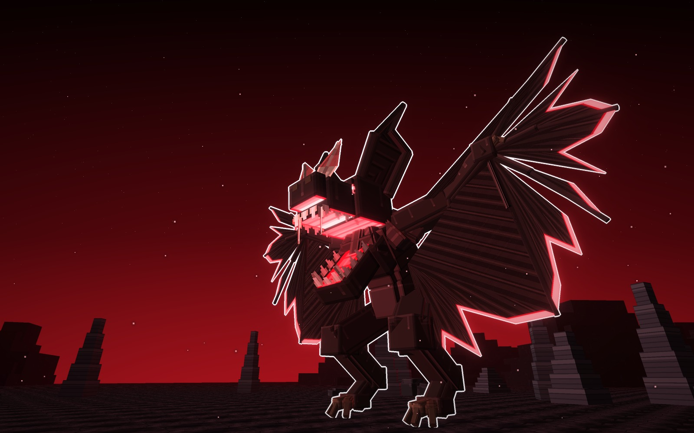
Zotzara, la Murciélaga de Xibalbá: sale de Camazotz, el murciélago de la muerte de los mayas, el que cortaba cabezas en la casa de los murciélagos del inframundo. Es una figura flaca y encorvada, agachada, con las alas abiertas del todo y la cabeza enmarcada por orejas enormes y pedernal. Tiene tres tipos: la Pedernal, la Desgarrada y la Coronada.
Los tres tipos son el mismo jefe y tienen la misma pose. Cambia lo que le enmarca la cabeza y el borde de las alas.
Vive a la entrada de Xibalbá, el inframundo maya, de noche: piedra oscura y agrietada, estalagmitas, rocas y riscos al fondo. Las fotos van sin letras y con el borde blanco.
Dos orejas altas en punta y, entre ellas, el cuchillo de pedernal. Las alas van en festones lisos, con el borde encendido en jade.
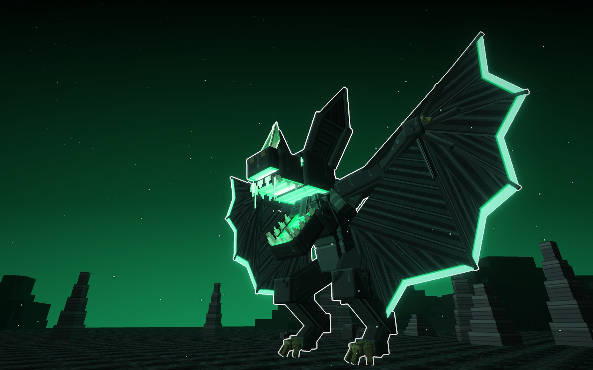
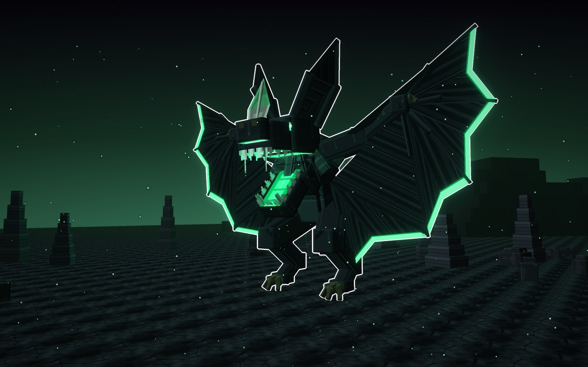
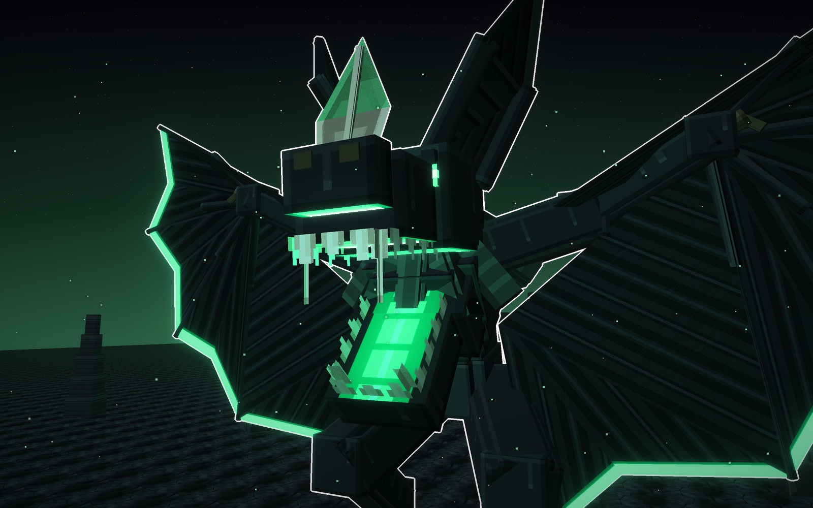
Las orejas tienen una muesca mordida en el borde de atrás y la nariz lleva dos cuchillos abiertos en V. Las alas están rotas, con desgarros que llegan a la muñeca y el borde mellado a dientes de sierra, encendido en rojo sangre.
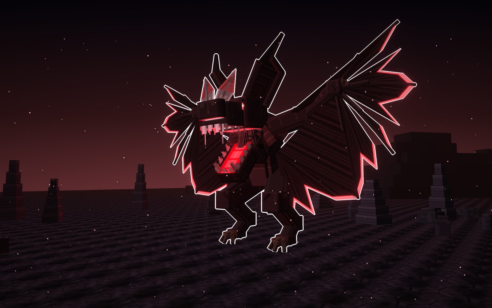
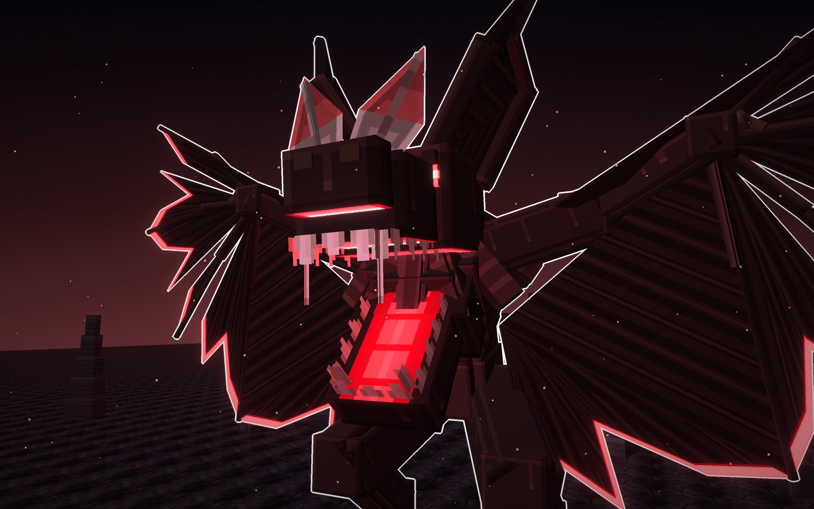
Cuatro orejas: dos altas y dos que se abren a los lados, como una corona. La nariz es una herradura de cuerno con un cuchillo corto encima, y cada dedo de las alas acaba en un garfio de cuerno. El borde, en festones, va encendido en oro.
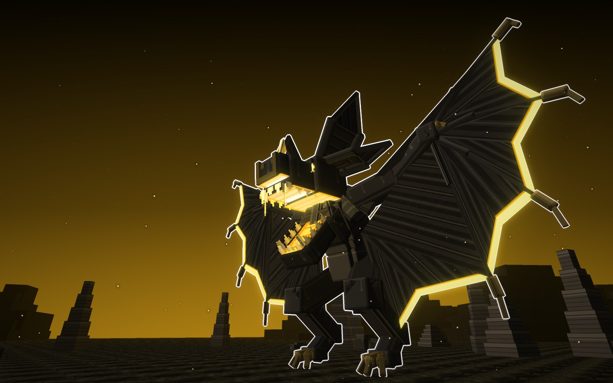
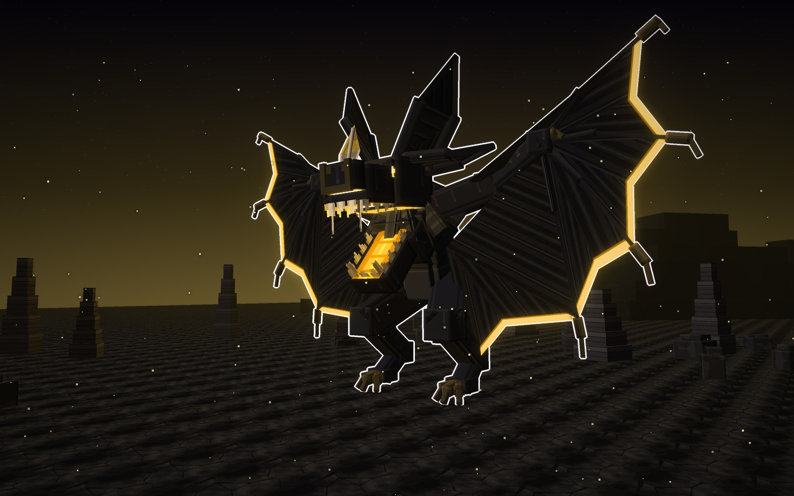
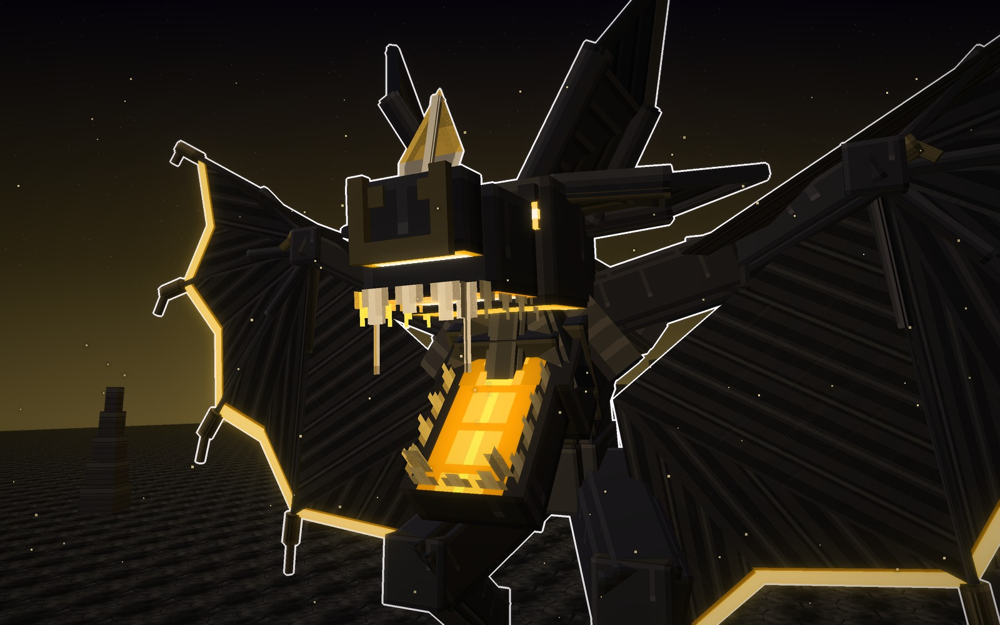
Los tres juntos, con la misma luz y un jugador delante (1,8 bloques).
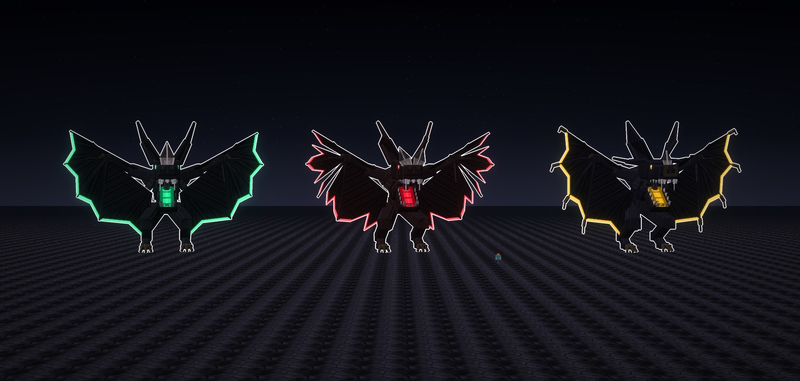
Las texturas de cada tipo a píxel grande, sin letras. Hay una fila por tipo y, de izquierda a derecha, van: la piel, la membrana con su borde encendido, la oreja por dentro, el pelo del collar, el pedernal, la garra, el ojo, el paladar, los dientes y el núcleo.
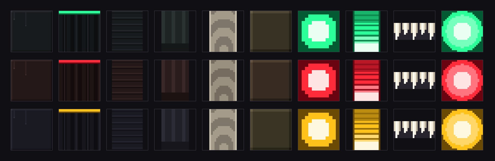
14-10-2026. La primera ficha tenía tres poses: la Encapuchada (con las alas cerradas como una capa), la Abierta (con las alas abiertas) y la Colgada (boca abajo de un árbol muerto). Juan la aprobó con una condición: «guarda Zotzara, pero que todos tengan la misma pose; recuerda que esto de los tipos es de un solo boss, una misma pose pero diferentes». Los tres van con la pose de la Abierta, y cambian las orejas, la nariz y el borde de las alas.
Bocetos: materiales/generadores/zotzara_modelo.py y zotzara_escenas.py (y kelpia_modelo.py y jefa_modelo.py, de los que toma los pintores comunes y los tubos de bloques).